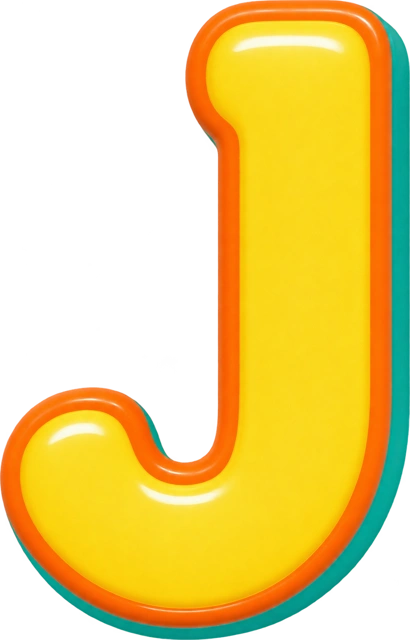
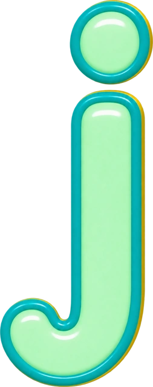
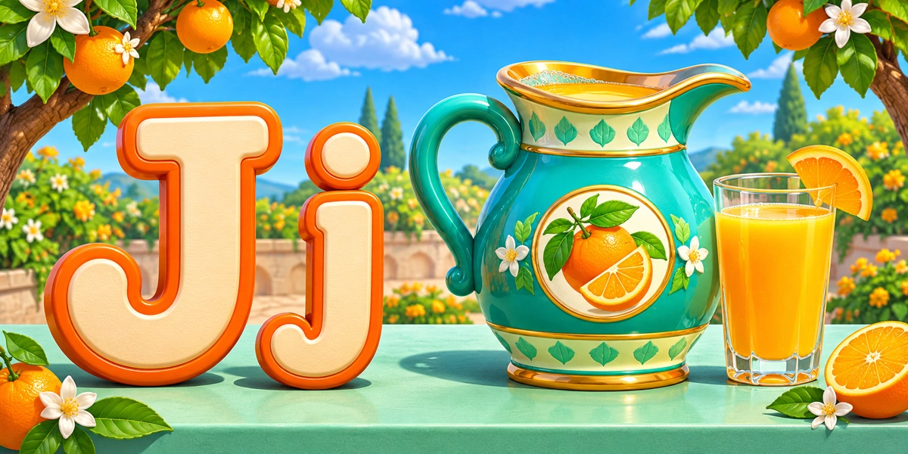
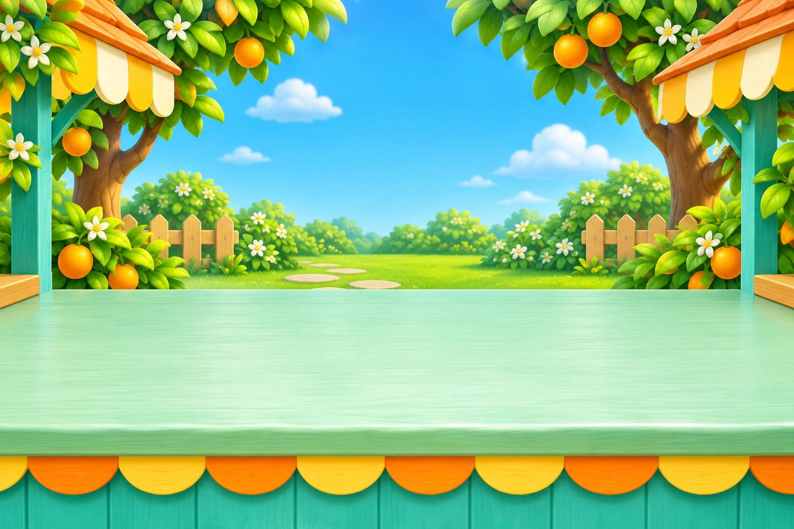
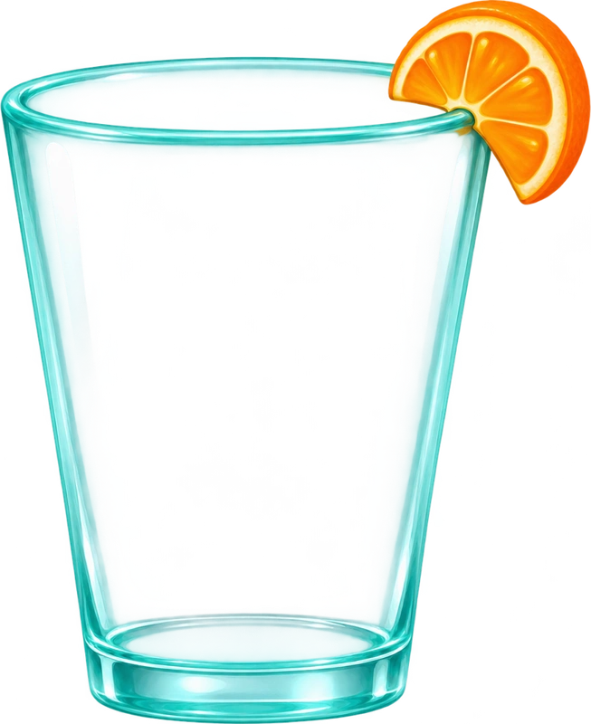
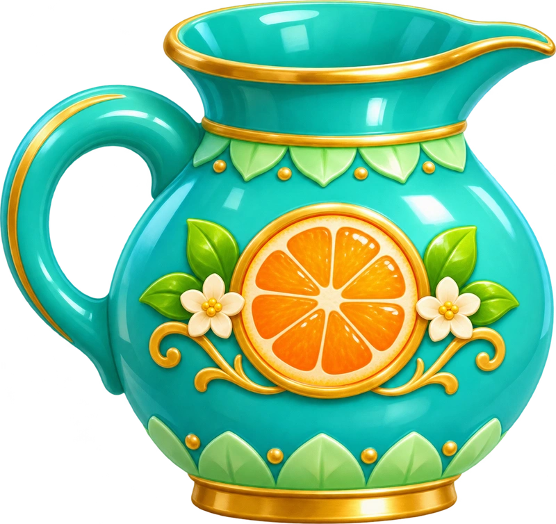
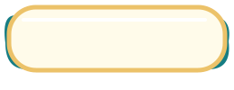

Unit 4 Lesson 3 · original garden, jug, glass and interface. Credits · Image provenance · Higgs voice manifest







letter
jug
juice
discover
pour
complete
Target /dʒ/, separate from letter name /dʒeɪ/. Compare two Higgs-derived takes.